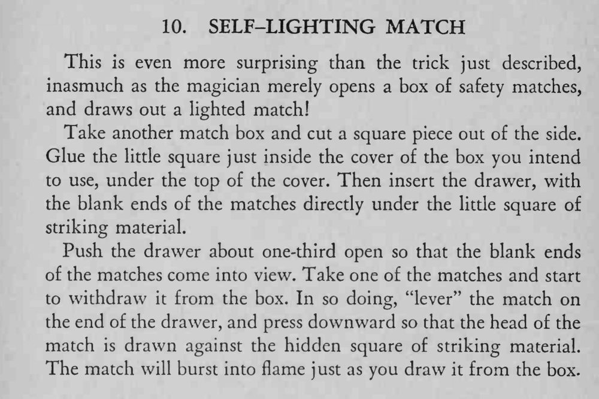

魔术师只打开一盒安全火柴，抽出来的那一根却已经是点燃的。
火柴头要正好蹭到盖内那一小方块砂纸，角度差一点就划不着。

This is even more surprising than the trick just described, inasmuch as the magician merely opens a box of safety matches, and draws out a lighted match! Take another match box and cut a square piece out of the side. Glue the little square just inside the cover of the box you intend to use, under the top of the cover. Then insert the drawer, with the blank ends of the matches directly under the litde square of striking material. Push the drawer about one-third open so that the blank ends of the matches come into view. Take one of the matches and start to withdraw it from the box. In so doing, "lever" the match on the end of the drawer, and press downward so that the head of the match is drawn against the hidden square of striking material. The match will burst into flame just as you draw it from the box.